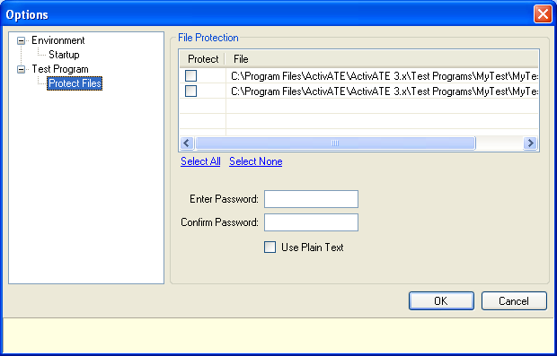
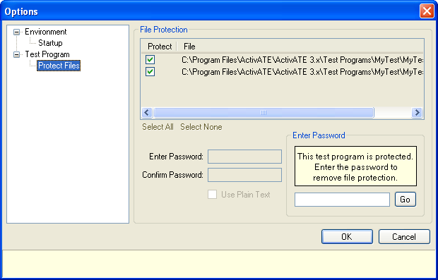

Once a test program has been developed and deployed, it is usually important to ensure that the program remains unchanged each time it is executed. The file protection feature allows the test program files to be protected against unwanted changes. When a test program is protected, it checks for changes before saving or running the test. If changes are detected, a warning message will be displayed, the changes will not be saved and the test program will not run.
Follow these steps to protect a test program:
To make modify or remove file protection for a protected test program, bring up the Options dialog. Enter the password and click Go. This removes all file protection. You may now make any changes and re-protect the program, or you may leave it unprotected.

Astronics Test Systems
Last updated on 12/6/07 by L. Anhalt